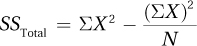

10.2 Calculating Between-Subjects, One-Way ANOVA
 StatClips: ANOVA - InferenceVideo on LaunchPad
StatClips: ANOVA - InferenceVideo on LaunchPad
Imagine that Dr. Chung, a psychologist who studies learning and motivation, designed a study to learn whether rats could discriminate among different types of food and if this discrimination influenced their behavior. He built a large and complex maze and trained 10 rats to run it. A rat would be placed in the start box and had to find its way to the goal box. To motivate the rats, food was placed in the goal box. Dr. Chung trained the rats with three different types of food: a low-calorie food, a normal-calorie food, and a high-calorie food. Each rat received an equal number of trials with each food and the rats were trained until they all ran the maze equally quickly.
337
Dr. Chung then put all the rats on a diet until they lost 10% of their normal body weight. The purpose of this was to increase their motivation to find food. Up until this point, all the rats had received the same treatment. Now, Dr. Chung implemented his experimental manipulation.
He randomly assigned the rats to three groups based on the type of food they would find in the goal box the next time they ran the maze: low-calorie, medium-calorie, or high-calorie. Each rat, individually, was placed in the maze and allowed to approach the goal box. When the rat got there, however, it found a screen that prevented it from entering. The rat could see and smell the food through the screen, but it couldn’t get to the food. The purpose of this was to inform the rat of the type of food that awaited it.
Dr. Chung picked up the rat, removed the screen, and placed the rat in the start box. He then timed, in seconds, how long it took the rat to get to the goal box. This is the dependent variable in his study and the fewer seconds it took the rat to get to the goal box, the faster the rat traveled the maze. Dr. Chung figured that if the different caloric contents of the foods had been recognized by the rats and if hungry rats were more motivated by higher-calorie foods, then the time taken to run the maze should differ among the three groups. The data and the means for the three groups are shown in Table 10.3.
The average was 31.00 seconds to get to the low-calorie food, 28.00 seconds for the medium-calorie food, and 25.00 seconds for the high-calorie food (Figure 10.6). It appears as if mean speed increases as calorie content goes up, but the effect is not dramatic. It seems possible that the differences among the three groups may be explained by sampling error. It is also possible that the calorie content of the food in the goal box has had an effect. A statistical test is needed to decide between these two options.
338
Step 1 Pick a Test
The first step of hypothesis testing is picking the right test. This study compares the means of three independent samples. There is one independent variable (calorie content), which has three levels (low, medium, and high). The dependent variable, seconds, is measured at the ratio level, so means can be calculated. This study calls for a between-subjects, one-way ANOVA.
339
Step 2 Check the Assumptions
The assumptions for the between-subjects, one-way ANOVA, listed in Table 10.4, are the same as they are for an independent-samples t test: (1) each sample should be a random sample from its population, (2) the cases should be independent of each other, (3) the dependent variable should be normally distributed in each population, and (4) each population should have the same degree of variability. The robustness of the assumptions is the same as for t. The only nonrobust assumption is the second one, the assumption of independence of observations within each group.
Here is an evaluation of the assumptions for the maze data:
Random samples. Though this is an experimental study in which cases were randomly assigned to experimental conditions, the initial sample wasn’t a random sample from the population of rats, so this assumption was violated. The assumption is robust, however, so Dr. Chung can proceed. However, he has to be careful about generalizing beyond the specific strain of rats he’s working with.
Independence of cases. Each rat was trained and tested individually. Each rat only provided one data point for the final test. So, this assumption was not violated.
Normality. It seems reasonable to assume that, within a population of rats, running speed is normally distributed. That is, for rats, there is a mean speed around which most animals cluster and the number of rats with higher and lower speeds tails off in both directions symmetrically.
Homogeneity of variance. A look at the three standard deviations (1.00, 0.82, and 1.00) shows that they are all about the same. There is no reason to believe that this assumption has been violated.
With no nonrobust assumptions violated, Dr. Chung can proceed with the planned between-subjects, one-way ANOVA.
Step 3 List the Hypotheses
The hypotheses are statements about the populations. In Dr. Chung’s study, there are three samples, with each one thought of as having come from a separate population. His hypotheses will be about the population of rats that finds low-calorie food in the goal box, the population of rats that finds medium-calorie food, and the population of rats that finds high-calorie food.
340
Look at Figure 10.5, the example of a sampling distribution for an F ratio, and notice two things—there are no negative values on the x-axis and the sampling distribution is positively skewed. It looks like there is only one “tail” to the sampling distribution. This doesn’t mean that all ANOVAs are one-tailed; it means just the opposite. Both “tails” are wrapped into this one side, so ANOVA always has nondirectional hypotheses. One doesn’t have to decide between a one-tailed or two-tailed test. ANOVA is always two-tailed.
The nondirectional null hypothesis will state that no difference exists in the means of the populations. The generic form of this, where there are k samples, is
H0: μ1 = μ2 = . . . = μk
For the maze study, with three populations, Dr. Chung’s null hypothesis is
H0: μ1 = μ2 = μ3
The alternative hypothesis, also nondirectional, says not all population means are equal. It is not written as μ1 ≠ μ2 ≠ μ3 because that doesn’t cover options like Populations 1 and 2 having different means but Populations 2 and 3 don’t. The alternative hypothesis states that at least two of the population means are different, and maybe all three are. There is no easy way to write this mathematically, so Dr. Chung will write it as
H1: At least one population mean is different from the others.
Step 4 Set the Decision Rule
This step finds the critical value of F, abbreviated Fcv, the value that separates the rare zone from the common zone of the sampling distribution of the F ratio. Figure 10.7 is an example of a sampling distribution of F with the rare and common zones marked.
341
The decision rule will sound familiar as it is similar to what we used for the z test and t tests: if the calculated value of the test statistic, F, falls on the line or in the rare zone, the null hypothesis is rejected.
If F ≥ Fcv, reject H0.
If F < Fcv, fail to reject H0.
To obtain the value of Fcv, use Appendix Table 4. It provides two Fcv tables: one for critical values of F with a 5% chance of making a Type I error (i.e., α = .05) and one for a 1% chance of making a Type I error (α = .01). A portion of the table with the most commonly used alpha level, .05, is shown in Table 10.5.
To determine the critical value of F, find the value at the intersection of the column for the degrees of freedom in the numerator and the row for the degrees of freedom in the denominator. Equation 10.1 shows how to calculate the different degrees of freedom needed for a between-subjects, one-way ANOVA. Recall the formula for F ratio from the previous section:
The numerator degrees of freedom for the F ratio, what defines the columns in the table of critical values of F, are called between-groups degrees of freedom. This is abbreviated as dfBetween.
The denominator degrees of freedom for the F ratio, what defines the rows in the table of critical values of F, are within-groups degrees of freedom. This is abbreviated as dfWithin.
The final degrees of freedom calculated in Equation 10.1 are total degrees of freedom. This is abbreviated as dfTotal and represents the total number of degrees of freedom in the data. Note that adding together dfBetween and dfWithin equals dfTotal.
342
Equation 10.1 Degrees of Freedom for Between-Subjects, One-Way ANOVA
dfBetween = k – 1
dfWithin = N – k
dfTotal = N – 1
where dfBetween = between-groups degrees of freedom (degrees of freedom for the numerator)
dfWithin = within-groups degrees of freedom (degrees of freedom for the denominator)
dfTotal = total degrees of freedom
k = the number of groups
N = the total number of cases
For the maze data, there are three groups (low-, medium-, and high-calorie), so k = 3. There are a total of 10 participants in the study, so N = 10. Given these values, degrees of freedom are calculated as
dfBetween = k – 1
= 3 – 1
= 2
dfWithin = N – k
= 10 – 3
= 7
dfTotal = N – 1
= 10 – 1
= 9
To find the critical value of F, Dr. Chung needs numerator degrees of freedom (dfBetween = 2) and denominator degrees of freedom (dfWithin = 7). The intersection of the column for 2 degrees of freedom and the row for 7 degrees of freedom leads to a critical value of F of 4.737. That means the decision rule for the maze data can now be written as:
If F ≥ 4.737, reject the null hypothesis.
If F < 4.737, fail to reject the null hypothesis.
The sampling distribution of F with degrees of freedom of 2 (numerator) and 7 (denominator) is shown in Figure 10.8. The critical value of F, Fcv = 4.737, is used to separate the rare zone from the common zone. If the observed value of F, the value of the test statistic calculated in Step 5, falls on the line or in the rare zone, the null hypothesis is rejected. If it falls in the common zone, Dr. Chung will fail to reject the null hypothesis.
343
Step 5 Calculate the Test Statistic
To complete the ANOVA, Dr. Chung’s next step is to analyze the variability in the maze data. This means taking account of variability both within and between groups:
Not each rat with the same type of food in the goal box coursed through the maze in the same amount of time, so there is variability within groups.
The three groups all had different means, so there is variability between groups.
To understand why analysis of variance is called analysis of variance, it is useful to review the variance formula from Chapter 3. Equation 3.6 says:
The numerator in the variance formula is calculated by following three steps: (1) calculating deviation scores by subtracting the mean from each score, (2) squaring all the deviation scores, and (3) adding up all the squared deviation scores. This numerator, a sum of squared deviation scores, is called a sum of squares, abbreviated as SS. Calculating sums of squares for the two sources of variability, between-groups and within-groups, is necessary to find the between- and within-group variances that are analyzed in an analysis of variance.
Actually, there are three sums of squares that are calculated. In addition to sum of squares between-groups (SSBetween) and sum of squares within groups (SSWithin), sum of squares total (SSTotal) is also calculated. Sum of squares total represents all the variability in the data. Between-subjects, one-way ANOVA divides SSTotal into between-groups sum of squares (SSBetween), which measures variability due to treatment, and within-groups sum of squares (SSWithin), which measures variability due to individual differences. In other words, SSTotal = SSBetween + SSWithin.
344
SSTotal represents all the variability in the scores. Between-subjects, one-way ANOVA divides it into variability due to the different ways the groups are treated, and variability due to individual differences.
Sum of squares total is calculated by treating all the cases as if they belong in one group: the grand mean, the mean of all the scores, is subtracted from each score, these deviation scores are squared, and the squared deviation scores are added up. Voilà, a sum of squares, the numerator for a variance.
Sum of squares between represents the variability between groups. It is calculated by subtracting the grand mean from each group mean, squaring these deviation scores, multiplying each squared deviation score by the number of cases in the group, and then adding them up. The final variance numerator, the one that represents variability within groups, sum of squares within, is calculated by taking each score, subtracting from it its group mean, squaring each deviation score, and adding them all up.
The calculations just described are what are called definitional formulas because the calculations explain what the value being calculated is. Unfortunately, definitional formulas often are not straightforward mathematically. In contrast, computational formulas are designed to be easier to use. Equation 10.2 is a computational formula for sum of squares total.
Equation 10.2 Formula for Calculating Sum of Squares Total for Between-Subjects, One-Way ANOVA

where SSTotal = total sum of squares
X = raw score
N = the total number of cases
This formula says:
Square each score and add them all up.
Add up all the scores, square the sum, and divide by the total number of cases.
Subtract the result of Step 2 from the result of Step 1.
The easiest way to do this is to take Table 10.3 and add another column to it, one for squared scores. This can be seen in Table 10.6. From the table, we can see that the sum of squared scores for Step 1 is 7,900.00.
345
Step 2 is next.
Finally,
Next, let’s use Equation 10.3 to calculate sum of squares between groups.
Equation 10.3 Formula for Calculating Between-Groups Sum of Squares for Between-Subjects, One-Way ANOVA
where SSBetween = between-groups sum of squares
XGroup = raw scores for cases in a group
nGroup = number of cases in a group
X = raw scores
N = total number of cases
Here’s how the formula works:
For each group, add up all the scores, square that sum, and divide that square by the number of cases in the group. Add up all these quotients.
Add up all the scores, square that sum, and divide that square by the total number of cases.
Subtract Step 2 from Step 1.
Again, most of the work has already been done in Table 10.6. Here is Step 1:
346
And, Step 2:
Finally,
The final sum of squares to calculate is the sum of squares within. Equation 10.4 covers this.
Equation 10.4 Formula for Calculating Sum of Squares Within for Between-Subjects, One-Way ANOVA
where SSWithin = sum of squares within
XGroup = raw scores for cases in a group
nGroup = number of cases in a group
For each group, square each score and add them all up.
For each group, add up all the scores, square the sum, and divide by the total number of cases.
For each group, subtract the result of Step 2 from the result of Step 1.
Add together all the remainders from Step 3.
As with the other sums of squares, Table 10.6 has the components already prepared:

347
Earlier in the chapter, it was stated that SSTotal = SSBetween + SSWithin. Let’s see if that is true. SSBetween is 54.00 and SSWithin is 6.00. They sum to 60.00, which is what we calculated SSTotal to be. This is shown visually in Figure 10.9.
Now that the degrees of freedom and sums of squares have been calculated, Dr. Chung can go on to calculate the F ratio. By organizing the sums of squares and the degrees of freedom into an ANOVA summary table, the F ratio will almost calculate itself.
Table 10.7 is a template of a summary table for a between-subjects, one-way ANOVA. It is important to note the order in which it is laid out—three rows and five columns. Always arrange a summary table for a between-subjects, one-way ANOVA in exactly this way:
There is one row for each source of variability:
Between-groups variability appears on the top row.
Within-groups variability is on the middle row.
Total variability goes on the bottom row.
348
The five columns, in order, tell:
The source of variability (between, within, or total).
The sum of squares calculated for that source of variability.
The degrees of freedom for that source of variability.
What is called the “mean square” for that source of variability.
The F ratio.
Dr. Chung already has enough information to fill in the second and third columns. Mean square, the fourth column, sounds like something new, but it is a variance by another name. To calculate the mean square, one divides the sum of squares in a row by the degrees of freedom for that row.
To see how a mean square is a variance, let’s revisit the variance formula from Chapter 3 one more time:
The numerator in this formula is the same as the sum of squares total. And, dfTotal is N – 1. Thus, if mean square total were calculated, it would be exactly the same as the variance for all the cases. Analysis of variance really does analyze variances.
The only mean squares needed to complete a between-subjects, one-way ANOVA are between-groups mean square (MSBetween) and within-groups mean square (MSWithin). As the mean square total is not needed, the convention is not to calculate it and to leave the space blank where mean square total would go.
The formula for calculating the between-groups mean square is given in Equation 10.5.
Equation 10.5 Formula for Between-Groups Mean Square, MSBetween, for Between-Subjects, One-Way ANOVA

where MSBetween = between-groups mean square
SSBetween = between-groups sum of squares
dfBetween = between-groups degrees of freedom
349
For the maze data, where SSBetween = 54.00 and dfBetween = 2, the between-groups mean square would be calculated:
Equation 10.6 offers the formula for the within-groups mean square.
Equation 10.6 Formula for Within-Groups Mean Square, MSWithin, for a Between-Subjects, One-Way ANOVA
where MSWithin = within-groups mean square
SSWithin = within-groups sum of squares
dfWithin = within-groups degrees of freedom
For the maze data, SSWithin = 6.00 and dfWithin = 7, so MSWithin would be calculated:
Once the two mean squares are calculated, it is time to calculate the F ratio. F is the ratio of variability due to between-group factors and individual differences divided by the variability due to individual differences. F is calculated as shown in Equation 10.7.
Equation 10.7 Formula for Calculating F for a Between-Subjects, One-Way ANOVA
where F = the F ratio
MSBetween = the between-groups mean square
MSWithin = the within-groups mean square
350
For the maze data, where MSBetween = 27.00 and MSWithin = 0.86, F is calculated as
The complete ANOVA summary table for the maze data is shown in Table 10.8. Table 10.9 is a summary table that provides the organization and formulas for completing a between-subjects, one-way ANOVA.
Worked Example 10.1
For practice with a between-subjects, one-way ANOVA, let’s explore how effective pain relievers like acetaminophen (Tylenol) and ibuprofen (Advil) are. Dr. Douglas, a sensory psychologist, wanted to see if medications such as these affected the pain threshold (how long it takes to perceive a stimulus as painful). Twelve male undergraduates volunteered for the study, and she randomly assigned them to three groups, one control group and two experimental groups, but tested each person individually. Each participant was given a pill—either a placebo, ibuprofen, or acetaminophen—waited an hour for the medication to take effect, then placed his hand in a bucket of ice water. As this was a test of pain threshold, he was told to remove his hand from the ice water as soon as it became painful. The researcher recorded the elapsed time, in seconds, as shown in Table 10.10. Note that this table has squared and summed scores so that the ANOVA computational formulas can be easily completed.
351
Figure 10.10 shows what appears to be an effect of the pain relievers on the pain threshold. Compared to the placebo group, those using acetaminophen took longer on average to feel pain, and those given ibuprofen took even longer on average. It is necessary, of course, to conduct a hypothesis test to see if the effect is statistically significant and isn’t plausibly accounted for by sampling error.
Step 1 Pick a Test
There are a number of conditions that lead to Dr. Douglas’s selection of between-subjects, one-way ANOVA as the appropriate test to analyze these data.
There is one independent variable (factor), the type of drug.
This factor has three levels (placebo, ibuprofen, and acetaminophen), so there are three samples or groups.
The cases were randomly assigned to the groups, so the samples are independent samples.
The dependent variable, number of seconds to pain threshold, is measured at the ratio level so means can be calculated for each group.
352
Step 2 Check the Assumptions
Random samples: The samples are made up of male, college-student volunteers, so they are not random samples from the human population. The random samples assumption is violated, but it is a robust assumption so the researcher can proceed. She’ll just have to be careful about the population to which she generalizes the results.
Independence of cases: Each participant was in the study only once. Plus, each participant was tested individually, uninfluenced by the other participants. This assumption was not violated.
Normality: Researchers are commonly willing to assume that psychological variables, like pain threshold, are normally distributed. So, this assumption is not violated.
Homogeneity of variance: All the standard deviations (4.04, 5.48, and 4.76, from Table 10.10) are very similar, so the amount of variability in each population seems about equal.
With no nonrobust assumptions violated, Dr. Douglas can proceed with the planned between-subjects, one-way ANOVA.
Step 3 List the Hypotheses
H0: μ1 = μ2 = μ3.
H1: At least one population mean is different from the others.
Step 4 Set the Decision Rule
In order to find the critical value of F, Dr. Douglas needs to know the degrees of freedom for the numerator (dfBetween) and for the denominator (dfWithin). To do so, she uses Equation 10.1:
dfBetween = k – 1
= 3 – 1
= 2
dfWithin = N – k
= 12 – 3
= 9
dfTotal = N – 1
= 12 – 1
= 11
353
Looking at the α = .05 version of Appendix Table 4—at the intersection of the column for 2 degrees of freedom in the numerator and the row for 9 degrees of freedom in the denominator—she finds Fcv is 4.256. Here is the decision rule:
If F ≥ 4.256, reject H0.
If F < 4.256, fail to reject H0.
Step 5 Calculate the Test Statistic
Dr. Douglas’s first step on the path to F is to calculate SSTotal, using Equation 10.2 and values from Table 10.10:
Next, she calculates SSBetween following Equation 10.3:
Finally, using Equation 10.4, she calculates SSWithin:
354
As a check that she has done the math correctly, she adds together SSBetween (62.00) and SSWithin (207.00) to make sure that they sum to sum of squares total (269.00). They do. Figure 10.11 shows this visually.
The final step is to complete an ANOVA summary table for the pain threshold data. The degrees of freedom and sums of squares already calculated can be used to start to fill in the summary table. Then, following the guidelines in Table 10.9, Dr. Douglas completes the ANOVA summary table (see Table 10.11), finding F =1.35. In the next section, we’ll learn how to interpret the results.
355
Practice Problems 10.2
Apply Your Knowledge
10.5 Select the correct test for this example: A gerontologist wants to determine which exercise program, yoga or stretching, leads to greater limberness in elderly people. He uses a ratio-level range-of-motion test to measure limberness and randomly assigns elderly people to receive either eight weeks of yoga or eight weeks of stretching.
10.6 Select the correct test for this example: A human factors psychologist is comparing three different adhesives used in sealing cereal boxes to see which one is easiest to open. He obtained 90 consumers, randomly assigned each participant to open one cereal box, and measured how long it took to open the box. Thirty of the boxes were sealed with Adhesive A, 30 with Adhesive B, and 30 with Adhesive C.
10.7 If the numerator df for a between-subjects, one-way ANOVA are 4 and the denominator df are 20, what is the decision rule if α = .05?
10.8 If a between-subjects, one-way ANOVA has 32 cases randomly assigned to four equally sized groups, what are dfBetween, dfWithin, and dfTotal?
10.9 Here are data on an interval-level variable for three independent samples. Prepare this table so that it would be ready for use in computing sums of squares. (Do not compute the sums of squares.)
| Group 1 | Group 2 | Group 3 |
| 16 | 12 | 13 |
| 17 | 14 | 15 |
| 20 | 18 |
10.10 Given the data in the table below, calculate (a) SSTotal, (b) SSBetween, and (c) SSWithin.
| Group 1 | Group 2 | Group 3 | ||||||
| X | X2 | X | X2 | X | X2 | |||
| 16 | 256 | 19 | 361 | 26 | 676 | |||
| 18 | 324 | 20 | 400 | 22 | 484 | |||
| 14 | 196 | 22 | 484 | 25 | 625 | Grand | ||
| 18 | 324 | 24 | 576 | 27 | 729 | X | X2 | |
| ∑ | 66.00 | 1,100.00 | 85.00 | 1,821.00 | 100.00 | 2,514.00 | 251.00 | 5,435.00 |
| n | 4 | 4 | 4 | 12 | ||||
10.11 Given dfBetween = 3, dfWithin = 12, dfTotal = 15, SSBetween = 716.00, SSWithin = 228.00, and SSTotal = 944.00, complete an ANOVA summary table.